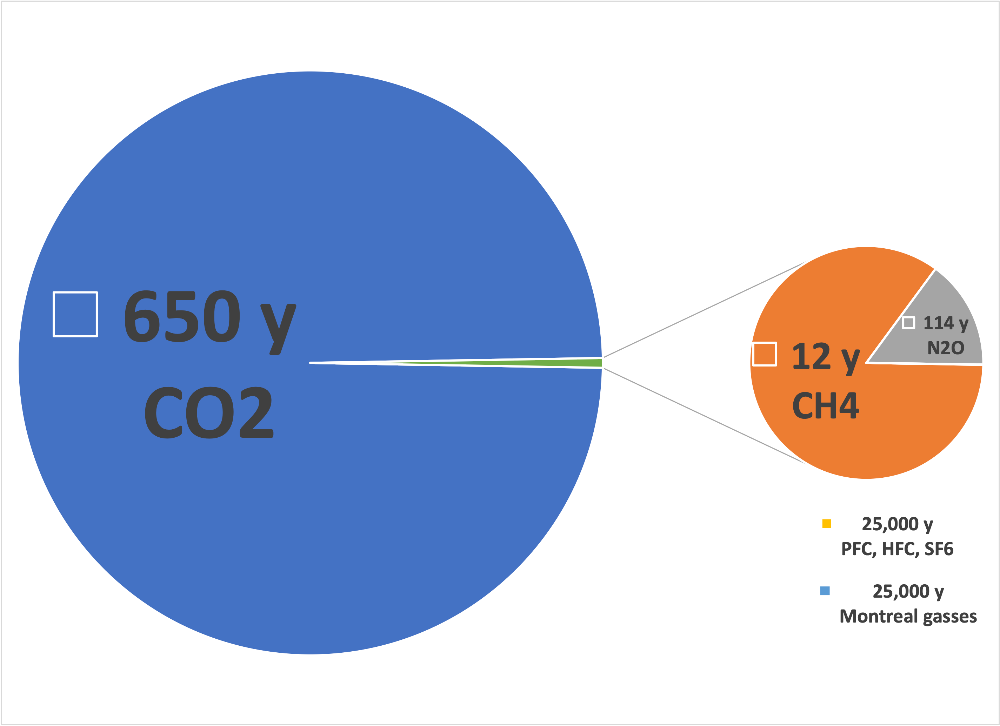

I thought I’d start with a simpleminded, in retrospect, understanding of The Greenhouse Effect and what I learned about it while writing. The Greenhouse Effect is, in essence, the physical explanation for why greenhouses heat up in direct sunlight, becoming much warmer than the surrounding air. The explanation is as follows: Glass is clear (transparent to visible light) but opaque in the infrared (absorbs radiant heat), So visible light absorbed inside the greenhouse when converted to heat cannot escape; the glass, by blocking both convection and radiation, keeps the heat inside.
In an earlier installment
1
, I covered the basic idea:
Starting at the upper right, the sun is very hot (5,525°K), emitting most of its photons in the visible range (down arrow). Earth’s atmosphere (in the gray) lets most photons through, where they are absorbed (or reflected) by the planet. Sunlight warms the planet to the 210-to-310°K (arctic-to-desert temperature range). Earth, as another but cooler heavenly body, then emits photons in the infrared range (up arrow). In this range, the atmosphere is semi-transparent, so some of the energy is retained, as in a greenhouse.
My first blind spot was revealed while considering the components of the atmosphere and how much they transmit. First, based on this figure, water vapor, not CO2, dominates the planet’s heat retention. Second, only a few parts of the spectrum can transmit any infrared photons out (there’s a lot of 0% transmission under the purple-blue-green curves), so adding more CO2 to the atmosphere should only perturb the system slightly, while changes in humidity should be pretty significant. That contradicts the relationship between atmospheric CO2 and warming, doesn’t it?
In hindsight, it is evident that there is no inconsistency. Instead, it was a blind spot. A pane of glass isn’t an accurate model of our atmosphere. If you paid attention to your high school Earth Science teacher, you know that there are distinct atmospheric layers, the troposphere, the stratosphere, and other “spheres” stretching from what we experience on the surface to the near-vacuum of outer space. Unlike the air in a greenhouse, our atmosphere gets thinner and changes in composition with altitude, but convection isn’t blocked entirely. Density changes only slow it. And there’s no conduction at the outer surface, only radiation.
Water vapor, although a potent GHG, stays close to the surface. We all know that water condenses and removes itself from the atmosphere (clouds & rain) instead of persisting for centuries and spreading everywhere like CO2. Further, clouds scatter and reflect sunlight (thus shading the planet). Consequently, not only does the air get thinner with altitude, but it also changes in composition.
Naturally, modelers have considered these facts and have concluded that water vapor’s effect on global warming (its EWP, or effective warming potential) is zero, at least within whatever modelers call “error”. The best recent treatment I’ve found is this reference
2
, but I’d love to know how big a factor water vapor might be as the atmosphere (on average) warms. I think it could amplify the warming produced by CO2, but it may not be dominant—I guess I will have to trust the expert modelers for now. I’m concerned, though, because models are only as good as the assumptions they are based on. In addition to CO2 and water, many less well-characterized atmospheric gases are parameterized to contribute (often disproportionately) to the absorption of outbound infrared radiation.
This point is where the concept of “CO2 equivalents”, denoted CO2e, comes into play. But how much do scientists
really
know about these other gases and how they’re distributed and interact with more abundant components? Indeed, they’re less well characterized than water!
My concern is that reducing CO2 in the atmosphere is a
hard
problem with only a few solutions (see the last issue). A rhetorical question: Could scientists seek to address other gases because they’re easier to deal with?
The distribution looks something like this (measured in the standard vernacular, CO2 equivalents):
When translated to absolute concentrations, this chart looks a little different:

In the previous chart, the relative concentrations of GHGs and their estimated lifetimes (in years) are adjusted to “CO2 equivalents”. Here, CO2 is measured in hundreds of ppm while the longer-lived gases are in ppt, or a million times more dilute.
As CO2 “equivalents”, the concentration and the lifetime of other gases (plus their transmission percentages) are ‘adjustments’, but in absolute terms, CO2 is still the 100,000-pound gorilla. The other gases may have an effect, but it’s a stretch to think that if we solve the easier problems (more dilute and less economically important gases), the hardest one (CO2) will let us claim “we tried”.
While it’s crystal clear that rising CO2 levels have closely tracked temperatures both historically (800,000 years’ worth
3
) and in recent times, the effect of these other gases is less well established. Again, I will need to trust the experts here, but I wonder if it’s an example of a syllogism that “just ain’t so”.
Steven C Sherwood et al 2018
Environ. Res. Lett
.
13
104006, downloaded from
iopscience.iop.org
. Please note that my antivirus software identifies a threat in one of the figures in this article.

{kind=link}